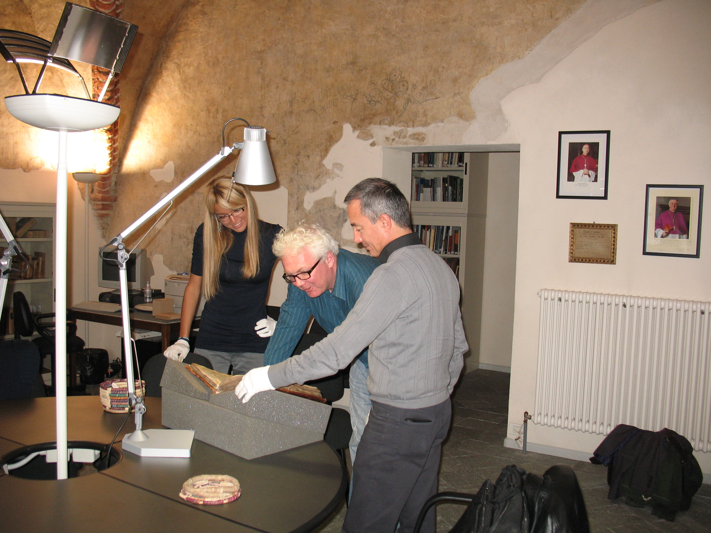
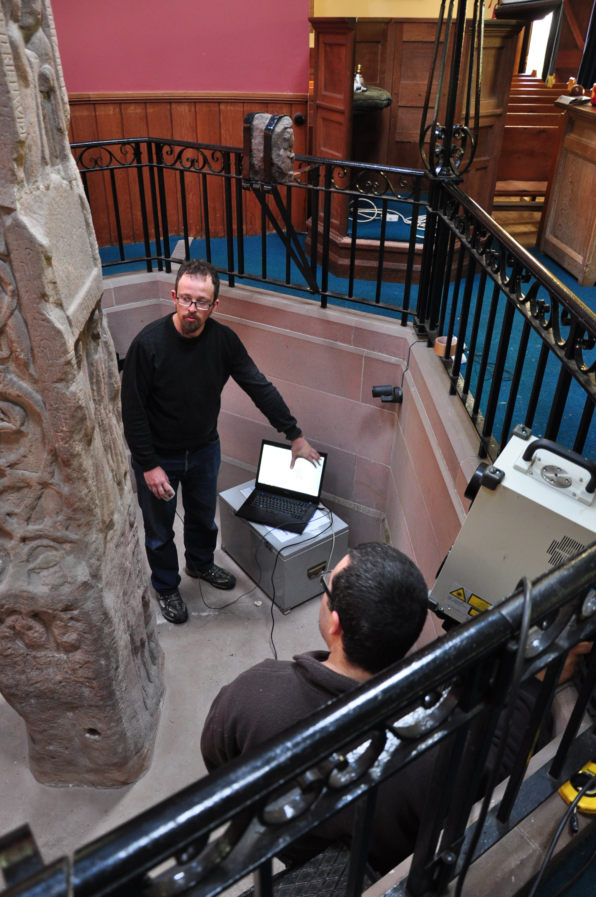

History of the Project
2012: 3D acquisition of the Ruthwell cross
The Ruthwell Cross is a 17 foot high stone cross erected in the eighth century near a former military site (later probably a monastery) in Dumfriesshire. The cross was pulled down and broken in the seventeenth century and partially reconstructed in the nineteenth. It is now located in a small apse on the north side of the Ruthwell church. The cross is carved with scriptural scenes surrounded by Latin inscriptions on its broad sides, there and with continuous vinescrolls surrounded by an Old English runic poem on its narrow sides. The poem may be the oldest known record of Anglo-Saxon vernacular poetry.
In 2012, a 3D scanning campaign took place in order to obtain a high quality 3D representation of the cross. The whole data processing pipeline was completed using MeshLab, the open source mesh processing tool created by Visual Computing Lab.

2013-2015: Building a digital edition of the Ruthwell cross
The creation of a high quality 3D representation of the cross was only the first step. The members of the working groups took advantage of the newly available HTML5 framework to build a web-based visualization that could integrate 3D visualization and textual information [3]. The main result of the effort has been the release of a first version of a digital edition of the cross and the experimentation on several editions regarding the runes carved in some panels of the cross [1][2].
2017: 3D acquisition of the Bewcastle cross
The Bewcastle Cross is an eighth-century standing stone cross also found on a former Roman military site, medications in this case on the terrace just inside the gate. Approximately the same size as Ruthwell, purchase the severely weathered Bewcastle Cross still stands in its original location. It has the remains of a sundial on its south side and may have been painted and decorated with other metalwork or glass attachments. The west face is carved with three figural panels, of which two also appear on Ruthwell. ISTI-CNR acquired the entire cross in July 2017.